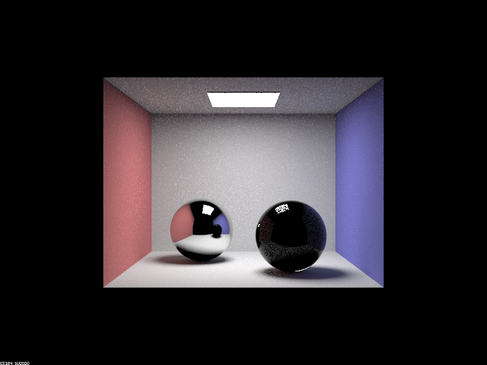

Overview
In this project, we build on top of the image rendering results from Proj 3-1 to create more cool visual lighting effects. We completed parts 1 and 4 of this project. In part 1, we implemented reflection and refraction of light, and use these to create mirror, refracting, and glass materials. In part 4, we implemented thin-lens camera model which allows us to change focus by changing lens radius and/or focal distance.
Part 1. Mirror and Glass Materials
Show a sequence of six images of scene `CBspheres.dae` rendered with `max_ray_depth` set to 0, 1, 2, 3, 4, 5, and 100. The other settings should be at least 64 samples per pixel and 4 samples per light. Make sure to include all screenshots.
|
|
|
|

|
|
|
|
|
|
|
Point out the new multibounce effects that appear in each image.
- From m=0 to m=1: Only self-emitting light sources are bright at first, then all surface directly get illuminated gets bright.
- From m=1 to m=2: Both balls can reflect light, but there is no refraction with the glass ball.
- From m=2 to m=3: Refraction begins within the glass ball.
- From m=3 to m=4: There appears to be a focused light point on the right wall. Looks like this is due to reflection and refraction of the glass ball.
- From m=4 to m=5: The shadow and overall environment (walls) becomes brighter.
- From m=5 to m=100: Not much visible changes.
Explain how these bounce numbers relate to the particular effects that appear. Make sure to include all screenshots.
- From m=0 to m=1: When m = 0, only the self-emitting object is bright since there is no ray traveling at all. When we increase the ray_depth from 0 to 1, surface that is directly illuminated shows up on the scene.
- From m=1 to m=2: An extra depth of ray here allows the reflective surface to reflect the light hit its surface. However, we can see the reflected scene on the reflective ball is the scene of the previous stage.
- From m=2 to m=3: Refraction effects starts to show up on the glass ball since ray needs two bounce to get into the glass ball and reflect back to the surface.
- From m=3 to m=4: With more bounces, light are more likely to be refracted into the glass ball, which then focus the light rays to a specific region on the wall , thereby forming the focused light point.
- From m=4 to m=5: Light in the previous level again gets reflected by the glass and metal sphere, and then intersects with the environment, which makes the environment brighter. More light gets refracted through the glass ball and arrive in the shadow area below the ball, which lits up the shadow.
- From m=5 to m=100: With m = 5 there are already enough light being reflected / refracted to create a global illumination, so increasing the level from 5 to 100 will not do much in changing the visual appearance of the image.
Part 2. Microfacet Material
Show a screenshot sequence of 4 images of scene `CBdragon_microfacet_au.dae` rendered with $\alpha$ set to 0.005, 0.05, 0.25 and 0.5. The other settings should be at least 128 samples per pixel and 1 samples per light. The number of bounces should be at least 5. Describe the differences between different images. Note that, to change the $\alpha$, just open the .dae file and search for `microfacet`.
Your response goes here.
Show two images of scene `CBbunny_microfacet_cu.dae` rendered using cosine hemisphere sampling (default) and your importance sampling. The sampling rate should be fixed at 64 samples per pixel and 1 samples per light. The number of bounces should be at least 5. Briefly discuss their difference.
Your response goes here.
Show at least one image with some other conductor material, replacing `eta` and `k`. Note that you should look up values for real data rather than modifying them arbitrarily. Tell us what kind of material your parameters correspond to.
Your response goes here.
Part 3. Environment Lightl
Pick one *.exr* file to use for all subparts here. Include a converted *.jpg* of it in your website so we know what map you are using.In a few sentences, explain the ideas behind environment lighting (i.e. why we do it/how it works).
Your response goes here.
Show the *probability_debug.png* file for the *.exr* file you are using, generated using the `save_probability_debug()` helper function after initializing your probability distributions.
Your response goes here.
Use the `bunny_unlit.dae` scene and your environment map *.exr* file and render two pictures, one with uniform sampling and one with importance sampling. Use 4 samples per pixel and 64 samples per light in each. Compare noise levels. Make sure to include all screenshots.
Your response goes here.
Use a different image (if you did part 2, we recommend `bunny_microfacet_cu_unlit.dae`) and your environment map *.exr* file and render two pictures, one with uniform sampling and one with importance sampling. Use 4 samples per pixel and 64 samples per light in each. Compare noise levels. Make sure to include all screenshots.
Your response goes here.
Part 4. Depth of Field
For these subparts, we recommend using a microfacet BSDF scene to show off the cool out of focus effects you can get with depth of field!In a few sentences, explain the differences between a pinhole camera model and a thin-lens camera model.
With a pinhole camera model, all light goes through one point at the camera and travels in straight line. In this model, everything is in focus. With a thin-lens camera model, lights are refracted and bent when it goes through the thin lens, thereby creating a plane of focus. Everything that is not within this plane are not in focus.
Show a "focus stack" where you focus at 4 visibly different depths through a scene. Make sure to include all screenshots.

|

|

|

|
Show a sequence of 4 pictures with visibly different aperture sizes, all focused at the same point in a scene. Make sure to include all screenshots.

|
|
|
|
|